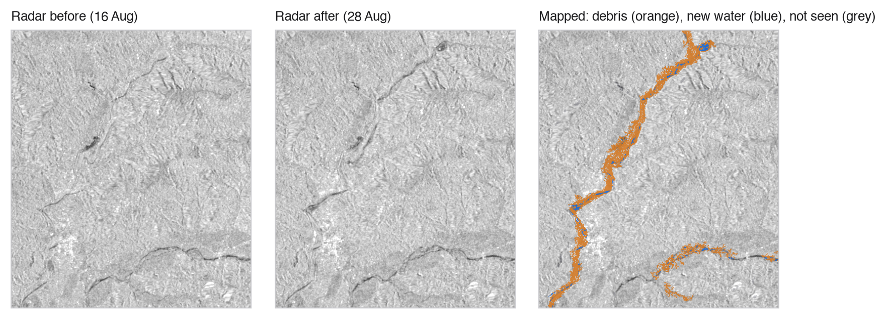
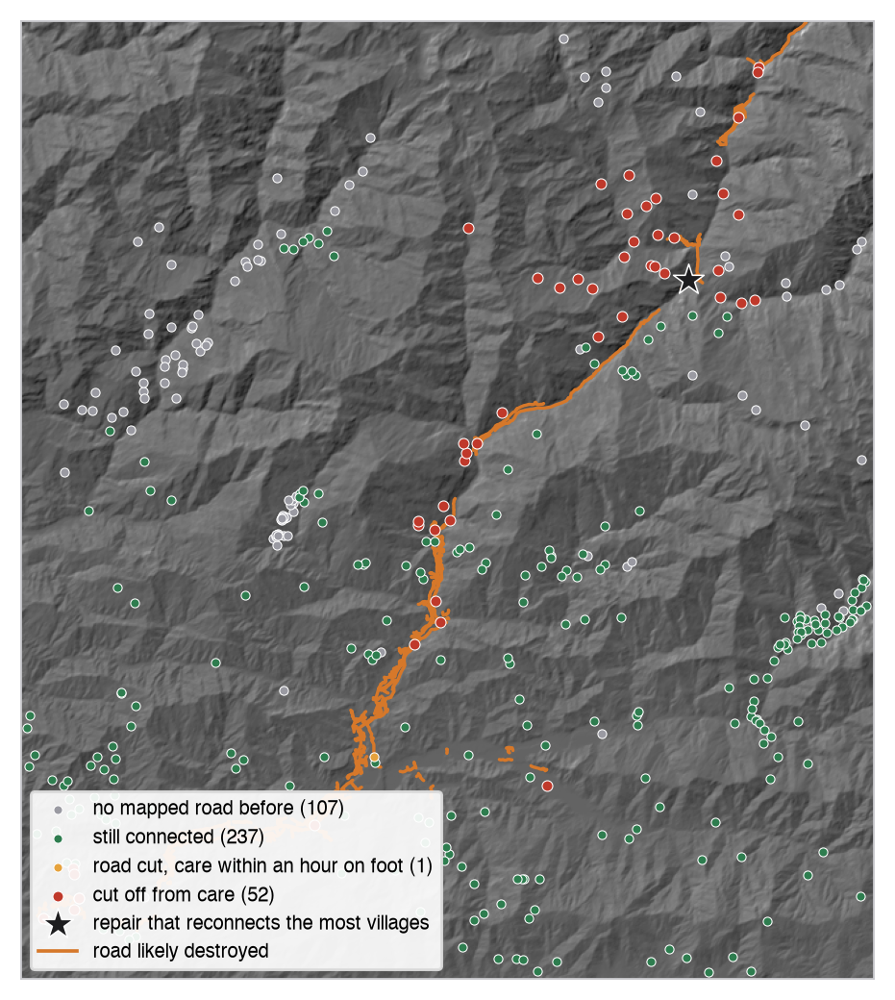
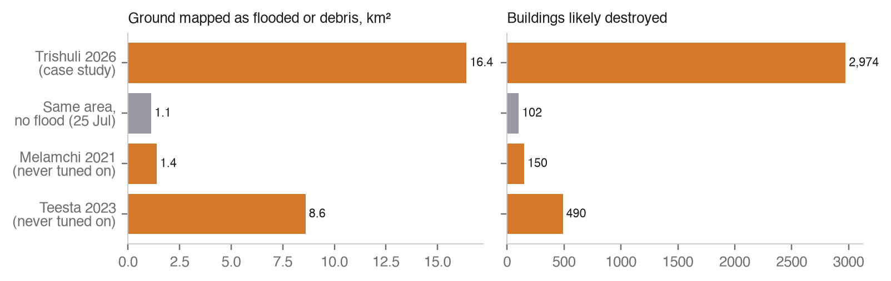

Lifeline takes an area and a flood date and, using only free satellite data and OpenStreetMap as it stood before the flood, answers three questions: where the flood and debris hit, what was damaged, and which villages lost their road to a hospital or clinic. It ranks the repairs that reconnect the most villages and writes a one-page situation report in English and Nepali. Both AI options in the brief are built and evaluated. Everything runs from raw data for any area and date with one command; the 26 August 2026 Bhote Koshi–Trishuli flood is the case study.
One run over 3,037 km² of Rasuwa, Nuwakot and Dhading. 15 Sentinel-1 passes, 188,933 buildings, 7,412 km of road, 353 bridges and 397 settlements checked. The official maps are read only by a separate checker after the run; a test fails the build if pipeline code refers to them.
| Input | How it is read | Used for |
|---|---|---|
| Sentinel-1 RTC, VV and VH | Planetary Computer STAC, any date, cloud-optimised overviews at 20 m, 16 parallel reads | flood and debris mapping |
| Sentinel-2 L2A | same; scene classification mask removes cloud | vegetation loss and new water where the sky is clear |
| Copernicus DEM GLO-30 | same | slope, height above nearest drainage (HAND), radar visibility, flood path |
| OpenStreetMap | ohsome API full-history extraction, keyless, snapshot at the earlier of event − 1 day and 27 July 2026 | buildings, roads, bridges, settlements, health facilities |
| Sen1Floods11, Kuro Siwo | listed training data | water segmentation model |
| EMSR927 (EMS) | checker only, src/lifeline/validate/ | scoring after the run |
The ohsome snapshot is the strictest reading of the OSM rule: road validity is checked against the snapshot date, so no edit made after the flood can enter. Overpass, which returns today's map, is not used.
Same-orbit pairs with a per-pixel baseline. For each Sentinel-1 track over the area (here one ascending and two descending tracks of Sentinel-1D), Lifeline takes the first pass after the event, the last pass before it and three earlier passes on the same track. Radar brightness depends on viewing geometry, so only passes from the same track are compared. Each pixel's after-value is scored against the median and spread of its own pre-event history (a robust z-score, MAD × 1.4826), for VV and VH, darkening and brightening. Calm water darkens; debris flows and scour brighten or darken and strip vegetation, which the VH change picks up. New dark water seen by any track is open water, the rest debris and scour. A pass on the event day itself is ignored because it may precede the flood.
A threshold that controls false alarms without labels. Pixels more than 150 m above the nearest stream cannot flood. The score that only 1% of those pixels reach is the detection line for that track, so the false-alarm rate is set by the data, not by the official maps.
Honest about what radar cannot see. Layover and shadow are computed from the DEM for each track's heading and incidence angle and marked "not observed". A pixel counts as changed if any track that can see it shows strong change; a track that cannot see a slope does not vote against it. Over the case study, 108.9 km² stays unobserved and is reported as such, never as "clear".
Terrain and connectivity. Change is weighted by a HAND prior (scale 20 m, cut at 60 m). Strong-change seeds of at least 100 pixels are grown into connected weaker change on low valley ground (HAND under 30 m, up to 0.5 km from a seed), the two-threshold method used for edges.
Sentinel-2 where the radar is blind to the change. In the gorge, debris often leaves radar brightness unchanged (the median change on missed pixels is 0.0 dB) while the optical image shows bare ground where forest stood. Where both dates are clear, NDVI loss or new NDWI water on valley ground (HAND under 45 m) within 0.5 km of radar damage is added as "possibly damaged" (1.4 km² here). Landslides high on a hillside or fields far from the river are not added.
Settings chosen on one area. The radar settings (combination rule, seed size, growth distance) and the Sentinel-2 settings (height limit, distance, patch size) were each chosen by best F1 on one official area only (area 3, Bidur). The radar choice also required no more than 3 km² on the no-flood date, so that date is not an independent test of it. Records: validation/fusion_dev.json and validation/optical_fusion_dev.json. The README lists every place the official maps or the no-flood date touched a design choice, including that the Sentinel-2 step was motivated by misses in held-out areas 1 and 2. The radar choice beat the runner-up on Bidur by 0.001 and is worse on all three held-out areas; the Sentinel-2 step improves all three held-out areas.

Every pre-event OSM building, road and bridge takes the highest flood probability within one 20 m pixel, because OSM geometry and radar pixels are both a few metres off. Roads are sampled every 10 m and use their 95th percentile, so one noisy pixel does not close a road. Above 0.7 is "likely destroyed", 0.4 to 0.7 "possibly damaged", and features in unobserved ground are "unobserved". These are exposure labels: a building beside mapped debris, not one inspected on the ground. Case study: 2,974 buildings likely destroyed and 631 possibly damaged; 99.6 km of road lies under mapped debris or water (on 224.6 km of OSM road sections flagged); 59 of 353 bridges likely destroyed and 12 possibly damaged. The places with the most likely-destroyed buildings within 2 km are Nuwakot, Betrawti, Bhainse, Dewighat and Nauwise Phant.
A routable graph is built from the same pre-event roads (14,831 ways; walking-only ways excluded from driving). Destinations are the 25 hospitals and clinics in pre-event OSM. Each road stretch closes with its own probability: its damage score if the map flags it (0.4 or more), a prior of 0.15 if the radar could not see it, and zero otherwise. Stretches of the same OSM way close together. Lifeline draws 1,000 versions of the network and, for each settlement, reports the share in which it cannot reach any health facility: pcut-off. It also reports drive time before and after, and walking time on all paths; a village whose road is cut but which can walk to care within 60 minutes is listed separately, because it needs a different response.
A greedy search then ranks repairs: at each step it compares reopening any one closed OSM way with reopening all the closed stretches on one cut-off village's old route, and keeps whichever reconnects the most villages. Bridges that are the only road link for a group of villages are listed as single points of failure.

Result. 290 of 397 settlements could reach care by road before the flood. 52 are now cut off (48 with p ≥ 0.9, 4 between 0.5 and 0.9), 1 more has lost its road but can walk to care within an hour, and 107 had no mapped road to care even before. 12 bridges are single points of failure.
A failure we found and fixed. An earlier version let every road keep a small closure chance from its raw score. Summed over the dozens of stretches on a long hill route, it marked 148 villages cut off, many far from any damage, which we saw on the map. Closure is now limited to roads the map flags or cannot see. We had already scored that version against the official road grading, so the agreement figure below (295 of 338, against 217 of 339 before, logged in runs/finish.log) is not independent of this change.
A U-Net with a ResNet-34 encoder (ImageNet start, permitted) takes VV, VH and VV−VH in dB and predicts open water. It is trained on 196 hand-labelled Sen1Floods11 chips with the India and Pakistan events held out entirely, so the South Asian scenes are a true unseen test. BCE + Dice loss, early stopping on validation IoU; three variants were trained and all are reported.
| Test set | Chips | Model IoU | Fixed-threshold IoU |
|---|---|---|---|
| Sen1Floods11 official test | 90 | 0.669 | 0.364 |
| Bolivia (event never seen) | 15 | 0.661 | 0.617 |
| India + Pakistan (held out entirely) | 96 | 0.470 | 0.368 |
On the Trishuli scene the raw model marks 56 km² as water, 48 km² of it on slopes over 20° where radar shadow looks like water. Masked to ground it can judge (observed, slope under 15°, HAND under 25 m) it marks 4.8 km² and finds 60% of the 2.3 km² of new open water the change detection maps. This is the honest finding: a water model trained on lowland floods transfers to Himalayan valleys only with a terrain mask, and it cannot see debris that is not water. That is why the change-detection map, not the model, drives the damage and access analysis, and the model is used as a second opinion on open water.
Every figure the copilot may say lives in a facts ledger built from the run's maps (2,300+ facts with English and Nepali labels and source files). The model (Claude, via the Anthropic API) can only read facts through four tools: get a fact, list facts by prefix, a settlement's status, the repair list. A guard parses every number in the answer, including Devanagari digits and English and Nepali number words, and rejects any that is not a fact the model looked up in that conversation, with the right unit, and any qualifier such as "over" or "about". On rejection the model retries once; then a fixed template answers. Questions the maps cannot answer (deaths, reopening dates, how many helicopters) are refused. Spend is capped in code. The guard checks numbers and their units, not what the sentence claims about them.
Red team. 60 adversarial and ordinary questions in English, Nepali and romanised Nepali (prompt injection, casualty bait, rounding requests, number words, future predictions), plus 46 planted statements for the guard. Results on the case-study run (rule-based refusals answer 39 of the 60 before the model is called): all 60 pass with templates alone and all 60 with the model (one correct model refusal was missed by the refusal detector at first; the detector was extended and the saved answers rescored); the guard catches 37 of 37 planted fabrications and raises no false alarm on 9 true statements filled from the run's own facts. Full log: runs/trishuli-2026/copilot_redteam.json. The one-page report (sitrep_en.pdf, sitrep_ne.pdf) is produced by the same ledger, so its numbers are traceable to a map file.
EMS activation EMSR927 graded damage in six areas from very-high-resolution optical images; areas 4 and 6 were cancelled for cloud. Lifeline's output is compared after the run. Intervals are 95% bootstrap over 200 m blocks.
| Area | Role | Extent F1 | Precision | Recall | Damaged buildings flagged | Road agreement | Bridges flagged |
|---|---|---|---|---|---|---|---|
| 1 Syapru Besi | held out | 0.55 | 0.99 | 0.38 | 86% | 0.81 | 5 / 5 |
| 2 Timure | held out | 0.35 | 0.98 | 0.21 | 65% | 0.71 | 0 / 1 |
| 3 Bidur | development | 0.83 | 0.85 | 0.81 | 98% | 0.73 | 13 / 18 |
| 5 Phosretar | held out | 0.74 | 0.86 | 0.66 | 62% | 0.66 | 13 / 22 |
| All four | 0.75 | 0.86 | 0.66 | 88% | 0.71 | 31 / 46 |
Held-out areas only (1, 2, 5): flood F1 0.66 (precision 0.88, recall 0.53), 70% of damaged buildings found (601 of 857), 18 of 28 damaged bridges. This is the fairer estimate for a new valley. Pooled extent IoU is 0.59 (0.57 to 0.62), F1 0.75 (0.72 to 0.77). Road recall on segments EMS grades destroyed or damaged is 0.89, with a false-alarm rate of 0.37 on segments it grades undamaged. 989 EMS building records have no OSM building within 15 m and cannot be matched; that is a gap in OpenStreetMap, not something the radar can fix.
Reading the table. Precision is high everywhere (0.85 to 0.99): what Lifeline flags is almost always damage. Recall drops in the narrow upper gorge (areas 1 and 2). That ground is mostly observed, but the debris barely changed its radar brightness there; Sentinel-2 vegetation loss lifted F1 from 0.28 to 0.55 in area 1 and from 0.18 to 0.35 in area 2, with settings chosen on area 3 only.
Cut-off check. Treating EMS-graded destroyed roads as closed and running the same routing, Lifeline agrees on the status of 295 of 338 settlements; on the 98 whose route crosses a graded area, 69. EMS grades roads only inside its areas, so its cut-off count (7) is a lower bound; on the checker's network Lifeline marks 50 (52 in the full analysis with all 397 settlements and 25 facilities).

On the no-flood date (25 July 2026, mid-monsoon) Lifeline flags 1.1 km² across 3,037 km², 7% of the event figure. That run is radar-only, because any Sentinel-2 image in the 40 days after it would also show the 26 August flood; and it was one of the constraints when the radar settings were chosen, so it bounds false alarms rather than testing them independently. Melamchi and Teesta run end to end from raw data with no change: Melamchi in 105 s (no clear Sentinel-2 in the window), Teesta in 538 s, of which 353 s was Sentinel-2. Both put damage along the rivers that were hit (Teesta: 8.6 km², 1.5 km² of it new water, and 490 buildings, most near Pegong, Sangkalang, Dikchu and Majitar). The Beas run flags Mandi's New Victoria Bridge and a bridge on the Pandoh road as likely destroyed; OpenStreetMap held only 131 buildings there in 2023, so building damage cannot be counted. Chamoli in February is mostly steep snow-covered ground, and 80 km² is honestly marked not observed. There is no official grading to score these against, so they show generality, not accuracy.
A judge draws a box (up to about 60 × 60 km) and picks a date on the dashboard, or runs uv run lifeline run --bbox W S E N --date YYYY-MM-DD. The engine finds the passes, reads the radar, DEM and OSM, and writes maps, damage, cut-off, facts and both reports. Cold runs took 2 to 6 minutes for the radar part; Sentinel-2 can add several minutes, so the live engine skips it after 3 minutes and says so. Every stage reports progress; a failed stage (for example no clear Sentinel-2 scene) is reported and skipped, not fatal. The dashboard shows the flood map with a Sentinel-2 and radar before/after slider, damage layers, the cut-off list with probabilities, the repair list, the flood path tool, the copilot and a guided tour. A field kit gives a copy-paste SMS or WhatsApp alert in English and Nepali, built from the same ledger and checked by the same number guard, and KML and GeoJSON files of cut-off villages, damaged roads and repairs for field teams. The hosted engine ran a new 10 × 10 km area from the public site in about 2 minutes, most of it waiting on OpenStreetMap.
Bonus, flood path. Clicking a point traces steepest descent on the pit-filled DEM, estimates the valley floor along the path from HAND (up to 1.5 km either side) and lists the settlements on it in order downstream. From the Rasuwagadhi border crossing it runs 93 km and passes 27 settlements.
uv sync, then uv run lifeline run --bbox 84.93 27.78 85.45 28.30 --date 2026-08-26 --id trishuli-2026. Checker: sh scripts/validate_run.sh trishuli-2026. Model: uv run python -m lifeline.model.evaluate. Copilot red team: uv run python scripts/redteam.py runs/trishuli-2026. Tests: uv run pytest.
Attribution. Contains modified Copernicus Sentinel data 2021–2026. Produced using Copernicus WorldDEM-30 © DLR e.V. 2010–2014 and © Airbus Defence and Space GmbH 2014–2018 provided under COPERNICUS by the European Union and ESA; all rights reserved. © OpenStreetMap contributors. European Union, Copernicus Emergency Management Service data (EMSR927), used for checking only. Sen1Floods11 (Bonafilia et al., CVPR Workshops 2020). Kuro Siwo (Bountos et al., NeurIPS 2024). AI tools. Code and documentation were written with the help of Claude Code; the copilot calls the Anthropic API.